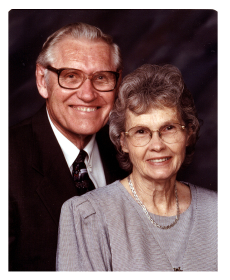
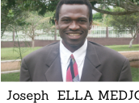

Une communauté théologique enracinée dans la Parole, au service de l'Église en Afrique et dans le monde.

Notre Histoire
La Faculté de Théologie Biblique du Cameroun (FATBICAM) forme des hommes et des femmes au service de l'Église, fondée sur la conviction que la Bible seule fait autorité pour la foi et la pratique.
Depuis notre campus de Yaoundé, nous accueillons des étudiants venus de tout le Cameroun et d'ailleurs, désireux d'approfondir leur connaissance des Écritures et de se préparer au ministère pastoral, missionnaire ou communautaire.
Notre enseignement s'appuie sur une étude rigoureuse et systématique de la Bible, dans le respect de son autorité et de son inerrance, transmise par des enseignants engagés et disponibles.
Au-delà des cours, la FATBICAM est une communauté de vie : les étudiants prient, servent et grandissent ensemble, dans un esprit de famille qui marque durablement leur parcours.
Former des hommes et des femmes fidèles aux Écritures, bien équipés pour le pastorat, l'enseignement biblique et le service de l'Église en Afrique et au-delà.
Voir des Églises solides et fidèles à la Parole, conduites par des ouvriers bien formés, dans chaque région du Cameroun et au-delà de ses frontières.
La Bible seule fait autorité pour notre foi et notre pratique, en toute chose.
Une formation rigoureuse et exigeante, à la hauteur de l'appel de nos étudiants.
Apprendre, prier et servir ensemble, dans un esprit de famille.
Une vie cohérente avec la Parole que nous étudions et enseignons.
Toute notre formation est orientée vers le service concret de l'Église.
Des enseignants et responsables engagés au quotidien auprès des étudiants.

Doyen
Directrice de la Section des femmes
Secrétaire Académique
Enseignant

Administrateur

Enseignante, Directrice du Centre Médical Chrétien
Enseignant
Ce que nous croyons, fondé sur les Saintes Écritures.
Nous croyons que la Bible, dans ses soixante-six livres, est la Parole de Dieu inspirée, infaillible et inerrante dans ses autographes. Elle est l'unique et suffisante autorité pour la foi et la conduite de vie.
Nous croyons en un seul Dieu, éternellement existant en trois personnes distinctes — le Père, le Fils et le Saint-Esprit — égales en puissance et en gloire.
Nous croyons en la pleine divinité et la pleine humanité de Jésus-Christ, né de la vierge Marie, mort sur la croix pour nos péchés, ressuscité corporellement et élevé à la droite du Père.
Nous croyons que le Saint-Esprit convainc le monde de péché, régénère le pécheur repentant et habite en permanence chaque croyant, le rendant capable de vivre une vie sainte et de servir efficacement.
Nous croyons que l'homme a été créé à l'image de Dieu, mais que par la désobéissance d'Adam, tous les hommes sont nés pécheurs et séparés de Dieu, incapables de se sauver eux-mêmes.
Nous croyons que le salut est un don de la grâce de Dieu, reçu par la foi seule en l'œuvre accomplie de Jésus-Christ, et non par les œuvres.
Nous croyons que l'Église, corps de Christ, est composée de tous les croyants nés de nouveau, distincte d'Israël, et appelée à l'adoration, à la communion fraternelle et à l'annonce de l'Évangile.
Nous croyons au retour personnel et visible de Jésus-Christ, à la résurrection des morts et au jugement final, où chacun rendra compte devant Dieu.
Ces ressources concernent principalement les prises de position de la FATBICAM sur certains sujets :
Découvrez nos formations et déposez votre candidature pour la prochaine rentrée.